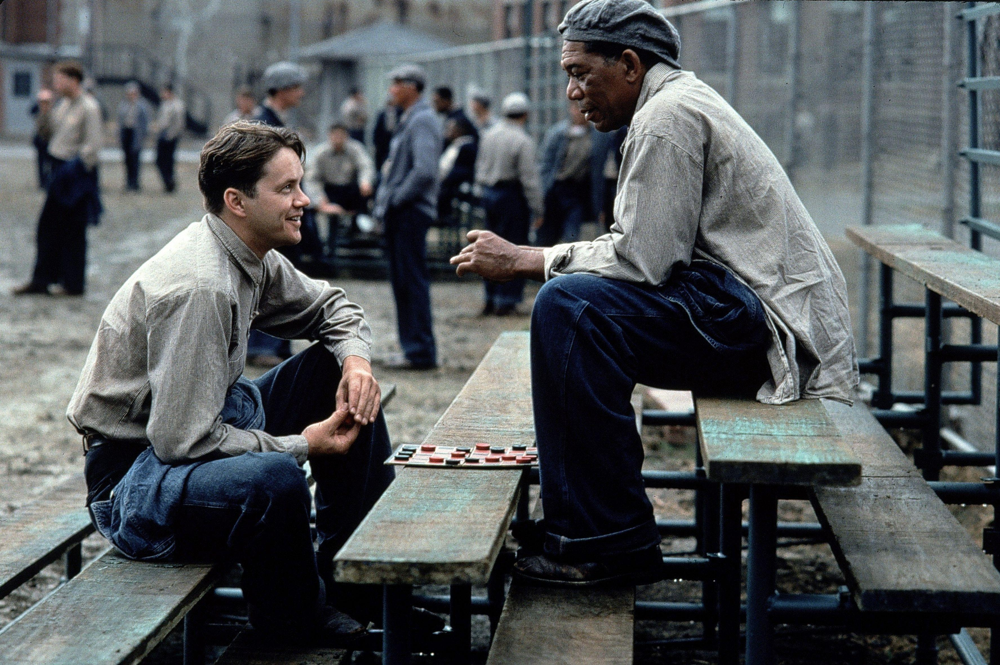
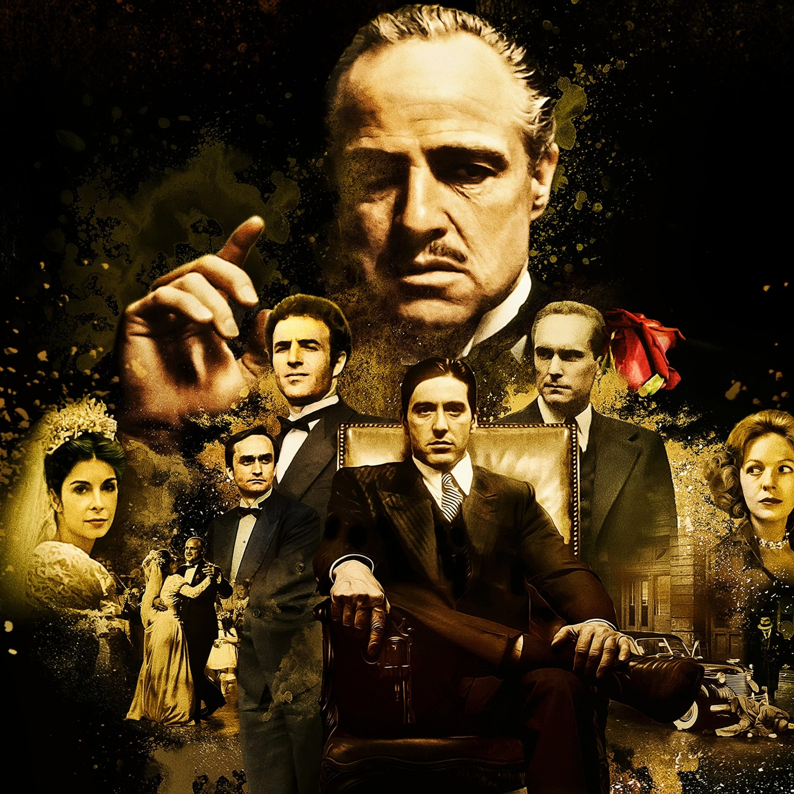
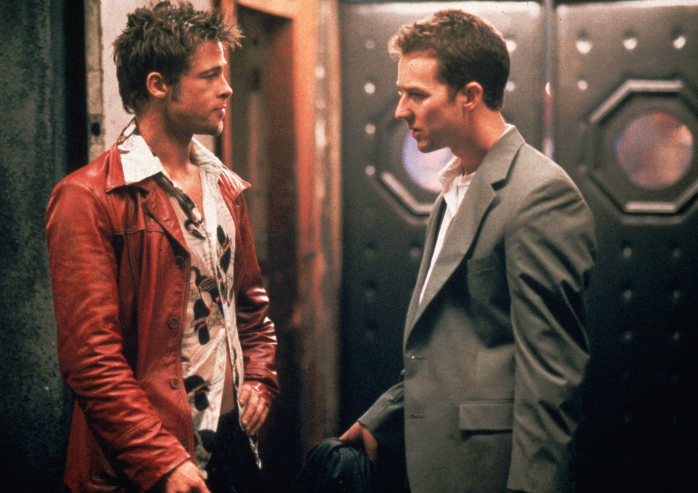
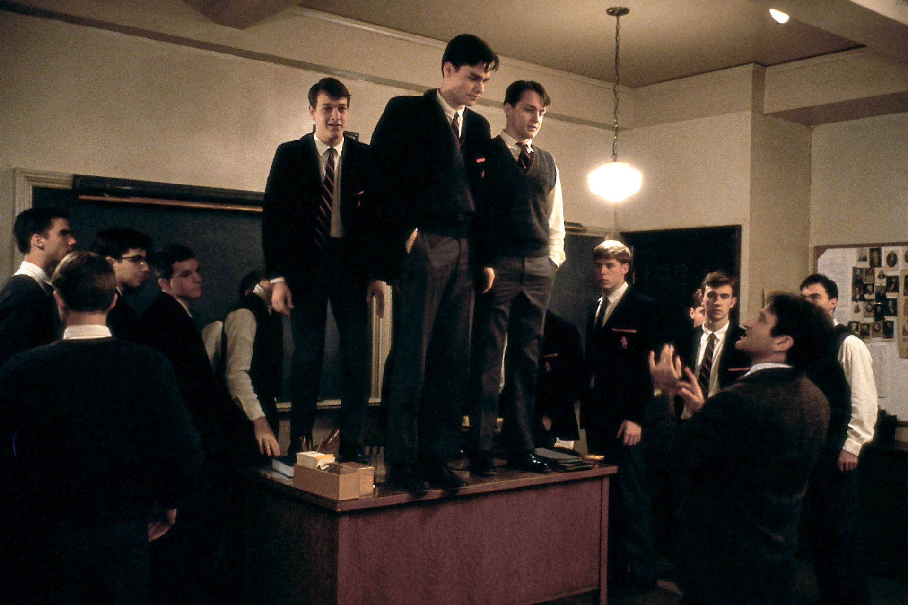
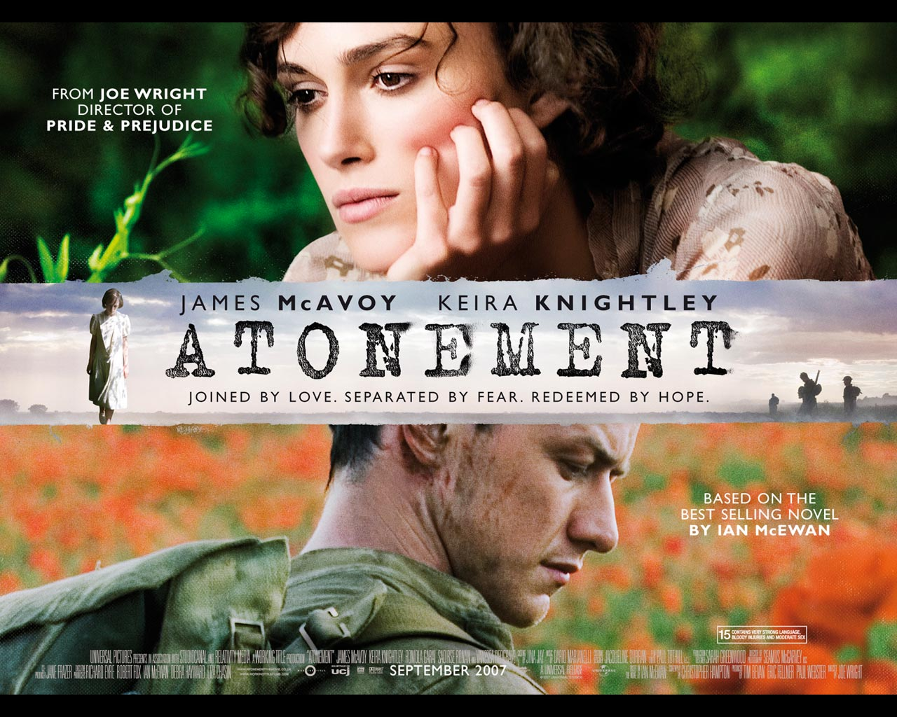

The Shawshank Redemption follows The Shawshank Redemption and tells the story of Andy Dufresne,
a banker who is wrongly convicted of murdering his wife and her lover and is sentenced to life in Shawshank Prison.
Despite facing brutal conditions and corruption, Andy remains patient, intelligent, and hopeful, forming a close
friendship with fellow inmate Ellis Boyd 'Red' Redding. Over many years, Andy uses his financial skills to
help prison officials while secretly planning his escape. He eventually reveals the prison warden’s
corruption, escapes through a tunnel he spent decades digging, and starts a new life in Mexico.
The film highlights themes of hope, perseverance, friendship, and the belief that freedom can be achieved even
in the darkest circumstances.

The Godfather follows the powerful Corleone crime family led by Vito Corleone. When rival gangs
attempt to take over the family's influence and Vito is nearly assassinated, his youngest son, Michael Corleone,
who initially wanted nothing to do with the family business, is drawn into the mafia world. Michael gradually
transforms from a reluctant war hero into a ruthless and calculating leader, ultimately taking control
of the Corleone empire through a series of strategic and violent actions while securing his family's power.
The Godfather Part II tells two parallel stories: the rise of young Vito Corleone from a poor Sicilian
immigrant to a powerful crime boss in New York, and the reign of Michael Corleone as head of the family.
While Vito builds his empire through loyalty and community ties, Michael struggles to expand and protect the
family business, becoming increasingly isolated, paranoid, and ruthless. His pursuit of power leads him to
betray those closest to him, including his own brother, resulting in personal tragedy and loneliness despite his
immense success. The film explores themes of power, family, corruption, and the cost of ambition.

Fight Club follows an unnamed office worker known as the Narrator, who is stuck in a dull, consumer-driven life and suffers from insomnia.
His world changes when he meets the charismatic and chaotic Tyler Durden, and together
they form an underground “fight club” where men gather to physically fight as a form of emotional release and rebellion
against modern consumer culture. As the club grows into a larger anarchic movement called Project Mayhem, the
Narrator slowly realizes that Tyler is not a separate person but a split personality of himself. The story escalates into
a psychological breakdown as he struggles to regain control over his identity while confronting the destructive ideology he helped create, ultimately leading
to a shocking confrontation with his own psyche.

Dead Poets Society is about a strict all-boys preparatory school where students are pressured to follow discipline, tradition, and high academic expectations.
The arrival of the new English teacher, John Keating, changes everything as he encourages his students to think independently, appreciate poetry,
and “seize the day” by living life with passion and individuality. Inspired by him, a group of students secretly revive the “Dead Poets Society” club
to explore poetry and their personal dreams. However, the pressure from conservative parents and the school’s rigid system leads
to tragedy when one student’s struggles end in suicide. Keating is ultimately blamed and forced to leave, but
before he goes, his students show their respect by standing on their desks, symbolizing how he helped them see the world differently
and value their own voices.

Atonement is a romantic war drama centered on a tragic misunderstanding caused by a young girl named Briony Tallis, whose false accusation against her
sister’s lover, Robbie Turner, destroys multiple lives. Robbie and Cecilia Tallis fall deeply in love, but Briony’s misinterpretation of
events leads to Robbie’s wrongful imprisonment and later his conscription into World War II, separating the couple permanently. As war devastates Europe,
both Robbie and Cecilia struggle to survive while holding onto hope of reunion, but fate continues to keep them apart. Years later,
it is revealed that Briony, now an older novelist, has been writing their story as an act of lifelong guilt and attempted
“atonement,” admitting that Robbie and Cecilia never truly got the happy ending she once imagined for them.